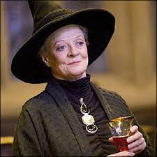

Por aquí te dejo algunos de nuestros objetos ✨mágicos✨ a mitad de precio:
Varita de Harry Potter

$14.000
La varita de Harry Potter mide veintiocho centímetros, y está hecha de acebo, con una pluma de fénix en su centro, la cual provenía de Fawkes, el fenix de Albus Dumbledore.
Varitas de Hermaione Granger

$14.000
Fabricada por Garrick Ollivander, está hecha de madera de vid y tiene un núcleo de fibra de corazón de dragón, mide 27.3 cm (10 3/4 pulgadas) de largo. Se caracteriza por ser flexible.
Varita de Ronald Weasley

$14.000
La varita de Ronald Weasley es descrita como una varita de sauce con un núcleo de pelo de unicornio. Su longitud es de 36 centímetros.
Varita de Luna Lovegood

$14.000
La varita de Luna presenta un patrón de bellotas grabadas a lo largo de su superficie, posiblemente indicando que está hecha de madera de roble, según Harry Potter.Varita de Ginny Weasley

$14.000
La varita de Ginny Weasley estaba hecha de madera de tejo con una longitud y un material de núcleo desconocidos.
Varita de Albus Dumbledore(Varita de Sauco)

$16.000
La Varita de Saúco, una de las Reliquias de la Muerte, se caracteriza por ser una varita poderosa y antigua, hecha de madera de saúco y con un núcleo de pelo de cola de Thestral.
Varita de Severus Snape

$13.000
La varita de Severus Snape, hecha de madera de pino negro y con un núcleo de nervio de corazón de dragón.
Varita de Minerva Mcgonagall

$13.000
La varita de Minerva McGonagall, es de madera de abeto y tiene un núcleo de fibra de corazón de dragón. Mide 24 cm de largo y es conocida por su elegancia y su gran adecuación para la transformación, habilidad que su dueña domina a la perfección.
Capa de Slytherin

$20.000
La capa de Slytherin, parte del uniforme de la casa Slytherin en Hogwarts, es de color verde y plateado. La túnica hecha de un material aterciopelado, tiene una capucha grande y un escudo de la casa Slytherin bordado en el pecho. También puede incluir un bolsillo oculto para la varita.
Capa de Hufflepuff

$20.000
Los colores de Hufflepuff, amarillo y negro, están presentes en el forro de la capa y posee una capucha en punta.
Capa de Ravenclaw

$20.000
La capa de Ravenclaw es de color azul y plata, los colores oficiales de la casa, y está decorada con el escudo de Ravenclaw, que muestra un águila.
Capa de Gryffindor

$20.000
La capa de Gryffindor, en el contexto de la saga de Harry Potter, se caracteriza por ser de color escarlata y oro, los colores representativos de la casa Gryffindor.
Por aquí te dejo algunos de los personajes principales:
Severus Snape

Severus Snape es un personaje complejo de Harry Potter, alto y delgado, con piel cetrina, cabello negro y ojos fríos. Es profesor de Pociones y jefe de Slytherin, ex Mortífago y agente doble para la Orden del Fénix. Su ambigüedad lo hace intrigante.
HMinerva Mcgonagall
Minerva McGonagall es la profesora de Transformaciones y jefa de Gryffindor en Harry Potter, además de ser directora de Hogwarts. Es conocida por su inteligencia, severidad y habilidad mágica, pudiendo transformarse en un gato atigrado. Es leal y dedicada a sus estudiantes.
Harry James Potter

Harry James Potter, nacido el 31 de julio de 1980, es un mago de sangre mestiza y único sobreviviente de la maldición Avada Kedavra, lanzada dos veces por Lord Voldemort. Su primera supervivencia marca la derrota inicial de Voldemort, y la segunda lleva a su destrucción definitiva, cerrando la Segunda Guerra Mágica.
Hermaione Granger

Hermione Jean Granger, nacida el 19 de septiembre de 1979, es una bruja hija de muggles. Descubrió su magia a los once años y fue aceptada en Hogwarts el 1 de septiembre de 1991, siendo seleccionada para la Casa Gryffindor. Es conocida por su brillantez académica y habilidades excepcionales como estudiante.
Ronald Weasley

Ronald "Ron" Bilius Weasley, nacido el 1 de marzo de 1980, es un mago de sangre pura y el sexto hijo de Arthur y Molly Weasley. Es el hermano menor de Bill, Charlie, Percy, Fred y George, y el mayor de Ginny. Junto a su familia, vive en la Madriguera, cerca de Ottery St. Catchpole.
Luna Lovegood
 Luna Lovegood, nacida el 13 de febrero de 1981, es conocida por su personalidad excéntrica y su visión única del mundo mágico. Hija de Xenophilius y Pandora Lovegood, Luna ingresa a Hogwarts en el mismo año que Harry y es seleccionada para la casa Ravenclaw.
Luna Lovegood, nacida el 13 de febrero de 1981, es conocida por su personalidad excéntrica y su visión única del mundo mágico. Hija de Xenophilius y Pandora Lovegood, Luna ingresa a Hogwarts en el mismo año que Harry y es seleccionada para la casa Ravenclaw.
Ginny Weasley

Ginevra "Ginny" Molly Weasley es la hija menor y única mujer de Arthur y Molly Weasley, y la hermana menor de Ron Weasley. Ginny es una bruja talentosa que asiste a Hogwarts y se une al Ejército de Dumbledore. Más tarde se casa con Harry Potter y tienen tres hijos: James Sirius, Albus Severus y Lily Luna.
Albus Dumbledore

Albus Dumbledore, nacido en 1881 y fallecido en 1997, fue un mago de sangre mestiza y director de Hogwarts. Ocupó altos cargos en el mundo mágico y es conocido por derrotar a Gellert Grindelwald y realizar importantes descubrimientos en magia y alquimia.